The perception system that finds every cone around a driverless race car, reads its color, and estimates its distance , rebuilt as a single multi-task model after the old two-stage pipeline couldn't keep up at range, on a budget of about €500 and with no discrete GPU to spare.
The autonomous system needs to find every track-boundary cone in view, tell what color it is, and estimate how far away it is , every frame, in real time, so the planning stack can trust it at racing speed. That's the whole perception job for a driverless car.
What made it hard wasn't the model, it was the box it had to run in. There was no discrete GPU: one drains the battery too fast over a race, and it physically didn't fit in the enclosure the driverless PC lives in, on the car. Everything had to run on the CPU/iGPU of a small embedded box. And the whole perception stack , sensors included , had to fit inside a roughly €500 budget, which ruled out expensive sensing hardware and pushed the problem back onto software.
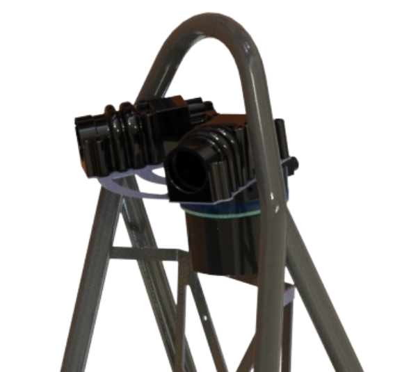
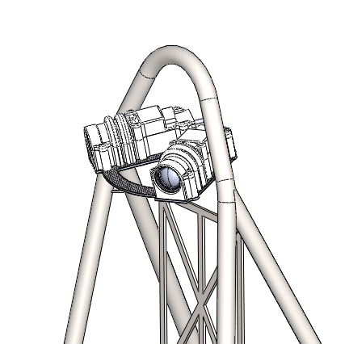
The pipeline I inherited was a decoupled, two-stage design: a YOLOv5n detector found cones, then cropped patches were handed to a separate ResNet-based keypoint CNN to estimate pose for the perspective-n-point distance calculation.
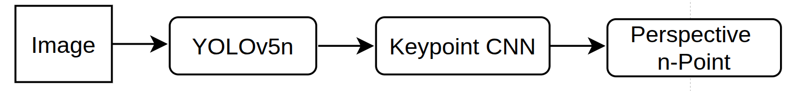
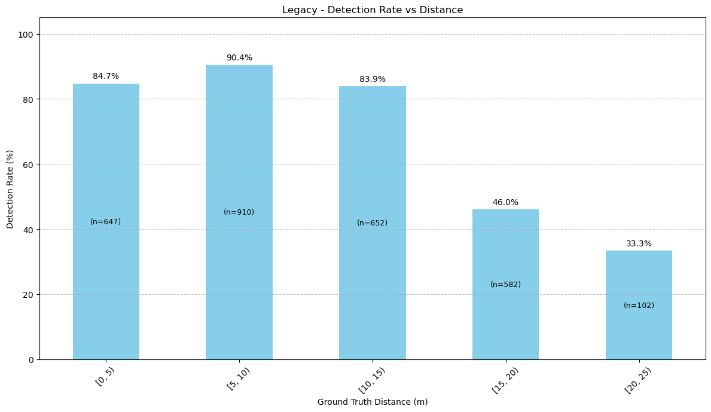
I replaced both stages with a single YOLO11n-Pose model that detects cones and predicts their keypoints in one forward pass, sharing one backbone instead of learning the same features twice.
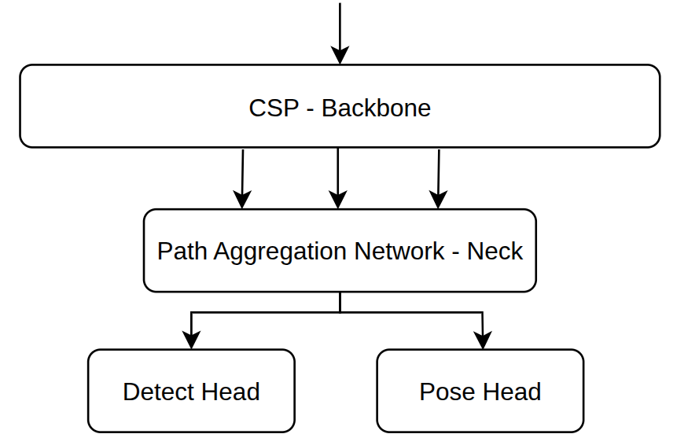
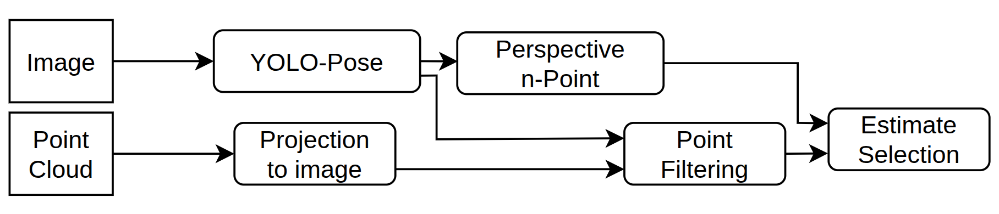
The keypoint head now reuses the rich features the shared backbone already learned for detection, and training all tasks together (instead of two separate training runs) improved both training efficiency and final accuracy.
| Model | Pose mAP@.75 |
|---|---|
| Baseline (no pretraining) | 84.1% |
| COCO pretrained | 90.8% |
| FSOCO pretrained | 92.7% |
Our own labeled dataset , with the box, class, and keypoints needed for pose , was small: about 4,200 cone instances, next to the 189,000 in the public FSOCO dataset (which only has boxes and classes, no keypoints). Pretraining on FSOCO's detection task first, then fine-tuning pose on our own labels, converged to a lower validation loss than starting from COCO weights or from scratch.
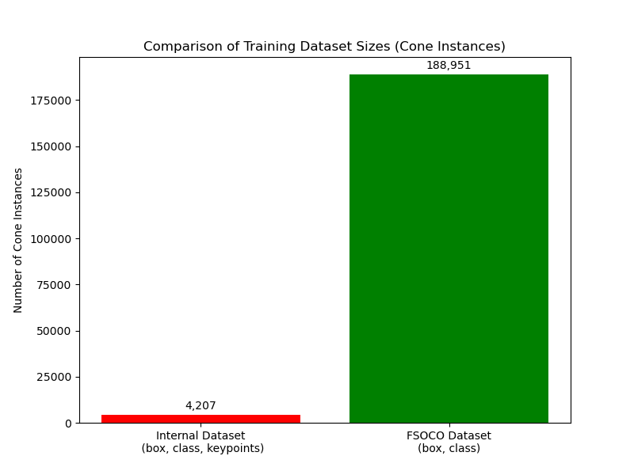
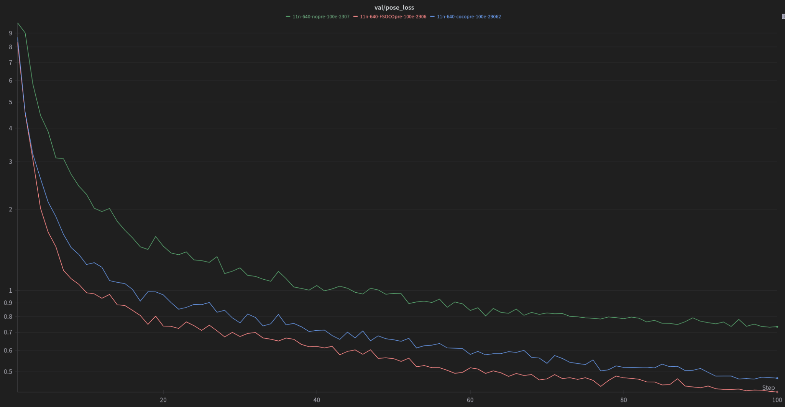
Distance comes from fusing the camera detections with a 16-layer LiDAR. The two sensors were calibrated together with a checkerboard pass so points from the cloud and pixels from the image plane agree.
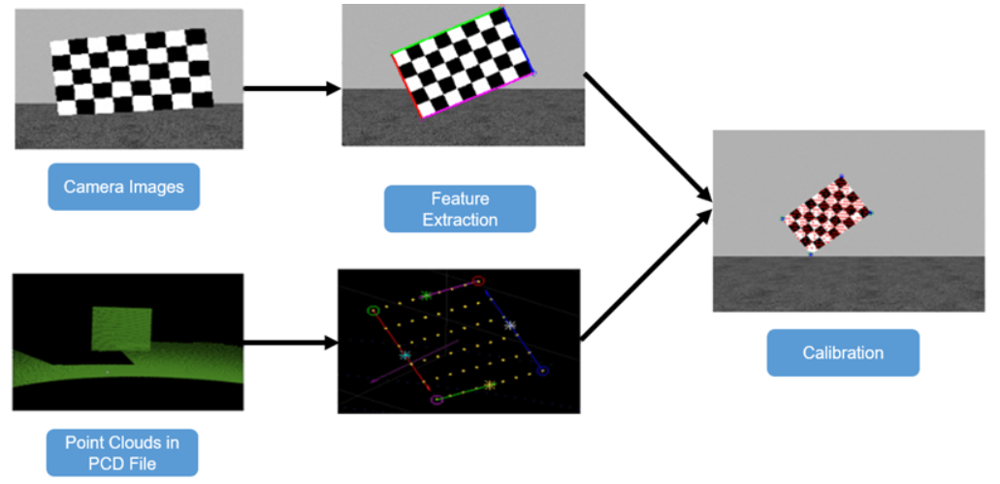
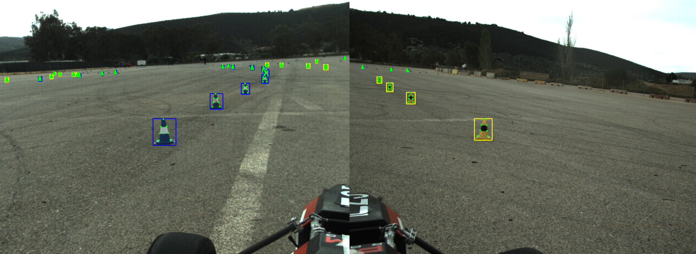
A naive approach , only keeping LiDAR points that land inside a cone's predicted keypoint mask , throws away valid points whenever the calibration is slightly off, which happens constantly with vibration on a moving car. I added a filtering step that's tolerant of that error instead of discarding everything outside a hard mask boundary, then chose between the camera-only PnP distance estimate and the LiDAR estimate per cone based on which was more reliable at that range.
On top of the architecture change itself, switching the inference runtime to OpenVINO instead of raw PyTorch made the real-time budget work on the car's Intel integrated graphics, more than halving inference time on its own.
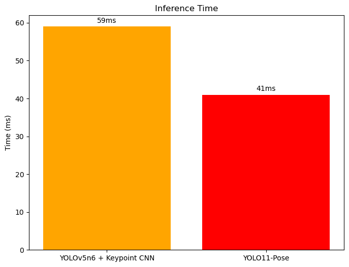
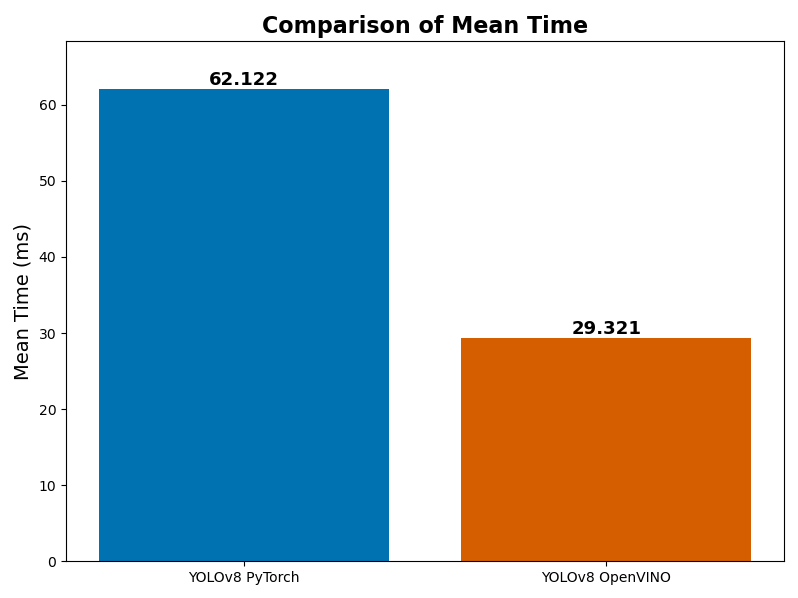
Against the legacy system on held-out track footage, the new pipeline is smaller, faster, and , the part that actually mattered on track , stays accurate at the distances where the car needs the most warning.
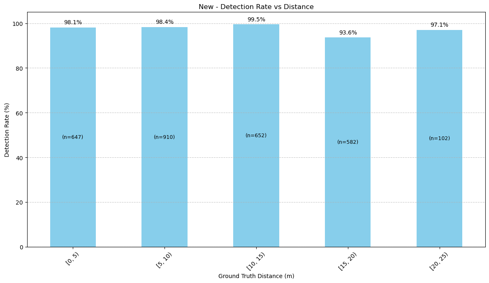
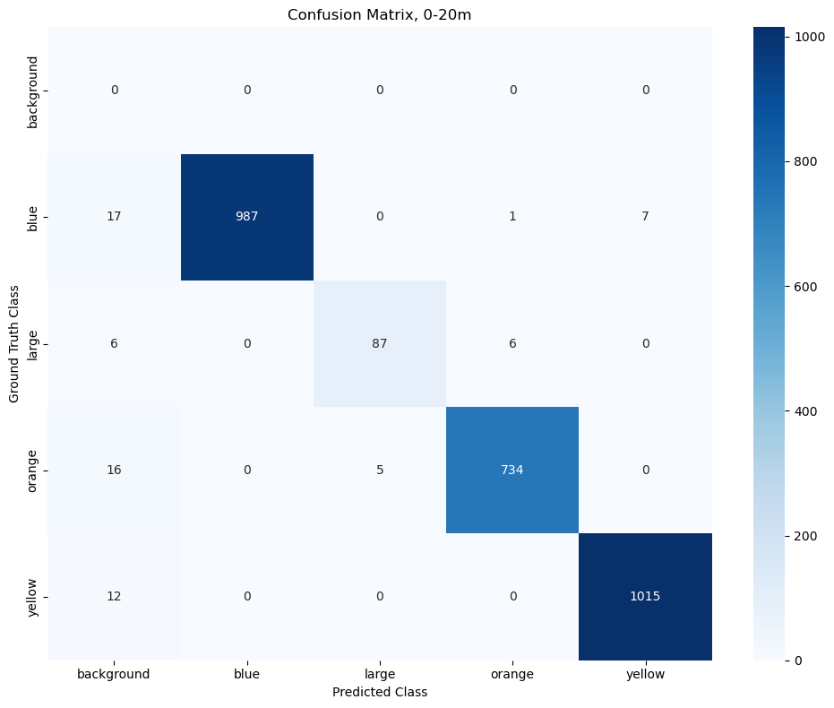
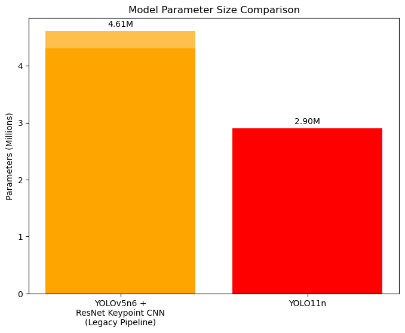
The system ran on-car through the season, feeding directly into the SLAM stack for autonomous laps. The codebase is unavailable, since it's still running on the car this season.